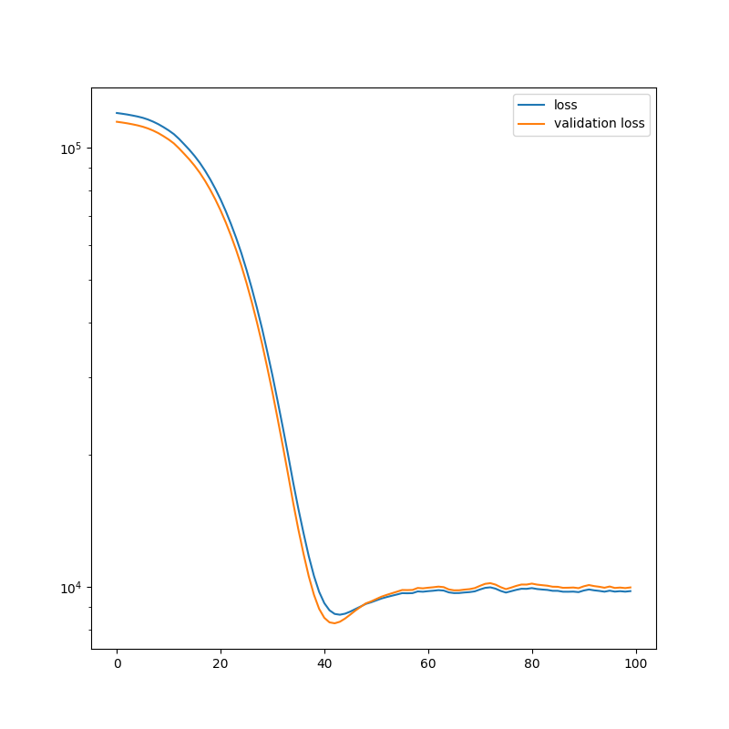

Note
Go to the end to download the full example code.
Deep learning with Attention
This script implements a model to predict a dummy dataset using MultiHeadAttention. The model has a similar structure to modern large language models, but with way less parameters.
Model summary:
Input - Output: (10)
Dense - (Input, Output): (10, 99) - Parameters: 1089
ReLU - Output: (99)
Reshape - (Input, Output): (99, (11, 9))
Layer list - (Input, Output): ((11, 9), (11, 9))
MultiHeadAttention - (Input, Output): ((11, 9), (11, 9))
Layer normalisation - Output: ((11, 9)) - Parameters: 22
Dense - (Input, Output): ((11, 9), (11, 9)) - Parameters: 90
ReLU - Output: ((11, 9))
Layer list - (Input, Output): ((11, 9), (11, 9))
MultiHeadAttention - (Input, Output): ((11, 9), (11, 9))
Layer normalisation - Output: ((11, 9)) - Parameters: 22
Dense - (Input, Output): ((11, 9), (11, 9)) - Parameters: 90
ReLU - Output: ((11, 9))
Layer list - (Input, Output): ((11, 9), (11, 9))
MultiHeadAttention - (Input, Output): ((11, 9), (11, 9))
Layer normalisation - Output: ((11, 9)) - Parameters: 22
Dense - (Input, Output): ((11, 9), (11, 9)) - Parameters: 90
ReLU - Output: ((11, 9))
Flatten - (Input, Output): ((11, 9), 99)
Dense - (Input, Output): (99, 1) - Parameters: 100
Total number of parameters: 1525
Epoch: 1 - Metrics: {'loss': '120151.7969', 'val_loss': '114753.6016'}
Epoch: 2 - Metrics: {'loss': '119704.5312', 'val_loss': '114314.1484'}
Epoch: 3 - Metrics: {'loss': '119201.7344', 'val_loss': '113824.6406'}
Epoch: 4 - Metrics: {'loss': '118604.6953', 'val_loss': '113247.4531'}
Epoch: 5 - Metrics: {'loss': '117954.3828', 'val_loss': '112598.4062'}
Epoch: 6 - Metrics: {'loss': '117161.3203', 'val_loss': '111806.2812'}
Epoch: 7 - Metrics: {'loss': '116119.9453', 'val_loss': '110802.8906'}
Epoch: 8 - Metrics: {'loss': '114822.7969', 'val_loss': '109570.4297'}
Epoch: 9 - Metrics: {'loss': '113317.7188', 'val_loss': '108118.1797'}
Epoch: 10 - Metrics: {'loss': '111563.2422', 'val_loss': '106392.8438'}
Epoch: 11 - Metrics: {'loss': '109663.4531', 'val_loss': '104543.8594'}
Epoch: 12 - Metrics: {'loss': '107544.6094', 'val_loss': '102440.6484'}
Epoch: 13 - Metrics: {'loss': '104881.0859', 'val_loss': '99783.3984'}
Epoch: 14 - Metrics: {'loss': '101934.4688', 'val_loss': '96954.0703'}
Epoch: 15 - Metrics: {'loss': '99016.3125', 'val_loss': '94121.6797'}
Epoch: 16 - Metrics: {'loss': '95894.1953', 'val_loss': '91092.3438'}
Epoch: 17 - Metrics: {'loss': '92502.0625', 'val_loss': '87795.8984'}
Epoch: 18 - Metrics: {'loss': '88817.6562', 'val_loss': '84209.4297'}
Epoch: 19 - Metrics: {'loss': '84871.5938', 'val_loss': '80363.7500'}
Epoch: 20 - Metrics: {'loss': '80713.7031', 'val_loss': '76318.1719'}
Epoch: 21 - Metrics: {'loss': '76367.5859', 'val_loss': '72092.0078'}
Epoch: 22 - Metrics: {'loss': '71826.1797', 'val_loss': '67687.6094'}
Epoch: 23 - Metrics: {'loss': '67140.3047', 'val_loss': '63153.5859'}
Epoch: 24 - Metrics: {'loss': '62422.2383', 'val_loss': '58586.2344'}
Epoch: 25 - Metrics: {'loss': '57642.3281', 'val_loss': '53964.2344'}
Epoch: 26 - Metrics: {'loss': '52779.7539', 'val_loss': '49273.7656'}
Epoch: 27 - Metrics: {'loss': '47979.7031', 'val_loss': '44647.8008'}
Epoch: 28 - Metrics: {'loss': '43282.6523', 'val_loss': '40131.3438'}
Epoch: 29 - Metrics: {'loss': '38773.8203', 'val_loss': '35814.5859'}
Epoch: 30 - Metrics: {'loss': '34371.3086', 'val_loss': '31607.8945'}
Epoch: 31 - Metrics: {'loss': '30334.3965', 'val_loss': '27771.2441'}
Epoch: 32 - Metrics: {'loss': '26518.8242', 'val_loss': '24164.0723'}
Epoch: 33 - Metrics: {'loss': '23097.9746', 'val_loss': '20949.0684'}
Epoch: 34 - Metrics: {'loss': '20035.9473', 'val_loss': '18084.5234'}
Epoch: 35 - Metrics: {'loss': '17288.5176', 'val_loss': '15543.9863'}
Epoch: 36 - Metrics: {'loss': '15061.9229', 'val_loss': '13511.8984'}
Epoch: 37 - Metrics: {'loss': '13252.7373', 'val_loss': '11890.5850'}
Epoch: 38 - Metrics: {'loss': '11754.1982', 'val_loss': '10576.2695'}
Epoch: 39 - Metrics: {'loss': '10600.3438', 'val_loss': '9601.2051'}
Epoch: 40 - Metrics: {'loss': '9748.0674', 'val_loss': '8915.9814'}
Epoch: 41 - Metrics: {'loss': '9186.5303', 'val_loss': '8506.2422'}
Epoch: 42 - Metrics: {'loss': '8847.7148', 'val_loss': '8306.1104'}
Epoch: 43 - Metrics: {'loss': '8682.1396', 'val_loss': '8266.0088'}
Epoch: 44 - Metrics: {'loss': '8646.6729', 'val_loss': '8334.3096'}
Epoch: 45 - Metrics: {'loss': '8693.4912', 'val_loss': '8475.1729'}
Epoch: 46 - Metrics: {'loss': '8789.5615', 'val_loss': '8651.8877'}
Epoch: 47 - Metrics: {'loss': '8908.7119', 'val_loss': '8839.1221'}
Epoch: 48 - Metrics: {'loss': '9027.6201', 'val_loss': '9009.4766'}
Epoch: 49 - Metrics: {'loss': '9151.2285', 'val_loss': '9175.8516'}
Epoch: 50 - Metrics: {'loss': '9227.2812', 'val_loss': '9270.0098'}
Epoch: 51 - Metrics: {'loss': '9319.2080', 'val_loss': '9386.7529'}
Epoch: 52 - Metrics: {'loss': '9412.2686', 'val_loss': '9503.1309'}
Epoch: 53 - Metrics: {'loss': '9484.5420', 'val_loss': '9592.7100'}
Epoch: 54 - Metrics: {'loss': '9550.4482', 'val_loss': '9674.5137'}
Epoch: 55 - Metrics: {'loss': '9614.4785', 'val_loss': '9756.5186'}
Epoch: 56 - Metrics: {'loss': '9682.2734', 'val_loss': '9843.1836'}
Epoch: 57 - Metrics: {'loss': '9675.4824', 'val_loss': '9838.4775'}
Epoch: 58 - Metrics: {'loss': '9682.9180', 'val_loss': '9846.7129'}
Epoch: 59 - Metrics: {'loss': '9770.1221', 'val_loss': '9949.4365'}
Epoch: 60 - Metrics: {'loss': '9754.7959', 'val_loss': '9929.6006'}
Epoch: 61 - Metrics: {'loss': '9783.4854', 'val_loss': '9961.6396'}
Epoch: 62 - Metrics: {'loss': '9805.7305', 'val_loss': '9986.9004'}
Epoch: 63 - Metrics: {'loss': '9835.2031', 'val_loss': '10019.3027'}
Epoch: 64 - Metrics: {'loss': '9814.9189', 'val_loss': '9992.7461'}
Epoch: 65 - Metrics: {'loss': '9720.7480', 'val_loss': '9872.6475'}
Epoch: 66 - Metrics: {'loss': '9685.3320', 'val_loss': '9827.2100'}
Epoch: 67 - Metrics: {'loss': '9688.1553', 'val_loss': '9829.3340'}
Epoch: 68 - Metrics: {'loss': '9715.8711', 'val_loss': '9863.3848'}
Epoch: 69 - Metrics: {'loss': '9735.3330', 'val_loss': '9888.7578'}
Epoch: 70 - Metrics: {'loss': '9773.6123', 'val_loss': '9942.9365'}
Epoch: 71 - Metrics: {'loss': '9871.1162', 'val_loss': '10060.7793'}
Epoch: 72 - Metrics: {'loss': '9954.1270', 'val_loss': '10166.9463'}
Epoch: 73 - Metrics: {'loss': '9982.3018', 'val_loss': '10202.6953'}
Epoch: 74 - Metrics: {'loss': '9913.5752', 'val_loss': '10125.6738'}
Epoch: 75 - Metrics: {'loss': '9795.6309', 'val_loss': '9990.7285'}
Epoch: 76 - Metrics: {'loss': '9712.0986', 'val_loss': '9888.5459'}
Epoch: 77 - Metrics: {'loss': '9780.6934', 'val_loss': '9967.5156'}
Epoch: 78 - Metrics: {'loss': '9852.0869', 'val_loss': '10058.8252'}
Epoch: 79 - Metrics: {'loss': '9907.8232', 'val_loss': '10130.0205'}
Epoch: 80 - Metrics: {'loss': '9903.3086', 'val_loss': '10128.5176'}
Epoch: 81 - Metrics: {'loss': '9942.4824', 'val_loss': '10179.6357'}
Epoch: 82 - Metrics: {'loss': '9894.7334', 'val_loss': '10125.7051'}
Epoch: 83 - Metrics: {'loss': '9868.2002', 'val_loss': '10095.3818'}
Epoch: 84 - Metrics: {'loss': '9847.4844', 'val_loss': '10067.8906'}
Epoch: 85 - Metrics: {'loss': '9801.6484', 'val_loss': '10014.8174'}
Epoch: 86 - Metrics: {'loss': '9799.7295', 'val_loss': '10009.1035'}
Epoch: 87 - Metrics: {'loss': '9755.0400', 'val_loss': '9956.5781'}
Epoch: 88 - Metrics: {'loss': '9753.7598', 'val_loss': '9961.4766'}
Epoch: 89 - Metrics: {'loss': '9760.5273', 'val_loss': '9972.4043'}
Epoch: 90 - Metrics: {'loss': '9734.5039', 'val_loss': '9938.7578'}
Epoch: 91 - Metrics: {'loss': '9816.0869', 'val_loss': '10035.5830'}
Epoch: 92 - Metrics: {'loss': '9871.4219', 'val_loss': '10103.0039'}
Epoch: 93 - Metrics: {'loss': '9826.9258', 'val_loss': '10047.7354'}
Epoch: 94 - Metrics: {'loss': '9796.4736', 'val_loss': '10011.3838'}
Epoch: 95 - Metrics: {'loss': '9756.5088', 'val_loss': '9961.4307'}
Epoch: 96 - Metrics: {'loss': '9807.9854', 'val_loss': '10025.3838'}
Epoch: 97 - Metrics: {'loss': '9760.7334', 'val_loss': '9948.2402'}
Epoch: 98 - Metrics: {'loss': '9782.9658', 'val_loss': '9970.3867'}
Epoch: 99 - Metrics: {'loss': '9759.0879', 'val_loss': '9942.3311'}
Epoch: 100 - Metrics: {'loss': '9787.1035', 'val_loss': '9976.9678'}
Test mean squared error: 8607.1103515625
import torch
import matplotlib.pyplot as plt
from DLL.DeepLearning.Model import Model
from DLL.DeepLearning.Layers import MultiHeadAttention, Dense, Flatten, Reshape, LayerList
from DLL.DeepLearning.Layers.Regularisation import LayerNorm
from DLL.DeepLearning.Layers.Activations import ReLU
from DLL.DeepLearning.Optimisers import ADAM
from DLL.DeepLearning.Losses import MSE
from DLL.Data.Preprocessing import data_split
from DLL.Data.Metrics import mean_squared_error
n = 1000
seq_len = 10
X = 10 * torch.rand((n, seq_len))
y = (X ** 2).sum(dim=1)
X_train, y_train, X_val, y_val, X_test, y_test = data_split(X, y, 0.6, 0.2)
block = LayerList(
MultiHeadAttention((11, 9), n_heads=3, dropout=0.5),
LayerNorm(),
Dense((11, 9)),
ReLU()
)
model = Model((seq_len,))
model.add(Dense(99, activation=ReLU()))
model.add(Reshape((11, 9)))
model.add(block.clone())
model.add(block.clone())
model.add(block.clone())
model.add(Flatten())
model.add(Dense(tuple()))
model.compile(ADAM(), MSE(), metrics=["loss", "val_loss"])
model.summary()
history = model.fit(X_train, y_train, val_data=(X_val, y_val), epochs=100, callback_frequency=1, batch_size=64, verbose=True)
y_pred = model.predict(X_test)
print(f"Test mean squared error: {mean_squared_error(y_pred, y_test)}")
plt.figure(figsize=(8, 8))
plt.semilogy(history["loss"], label="loss")
plt.semilogy(history["val_loss"], label="validation loss")
plt.legend()
plt.show()
Total running time of the script: (0 minutes 25.533 seconds)